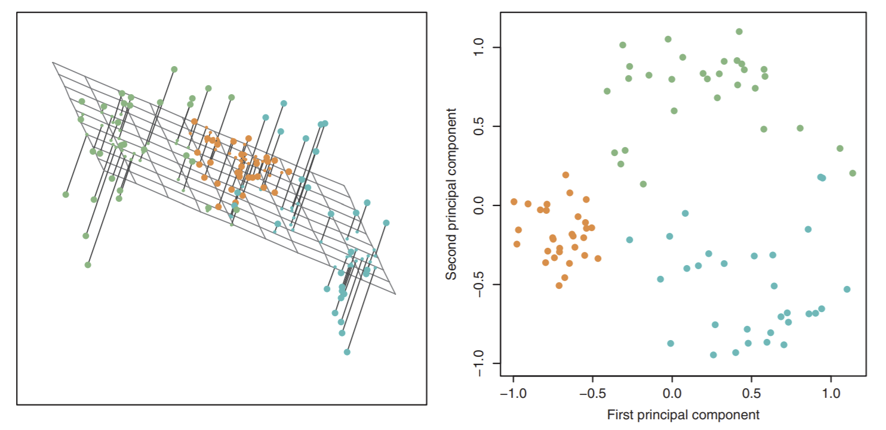
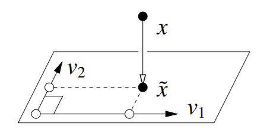
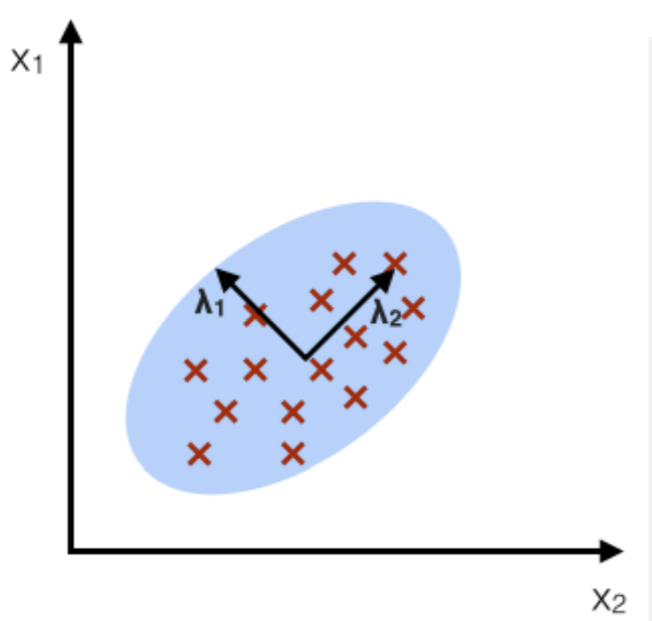
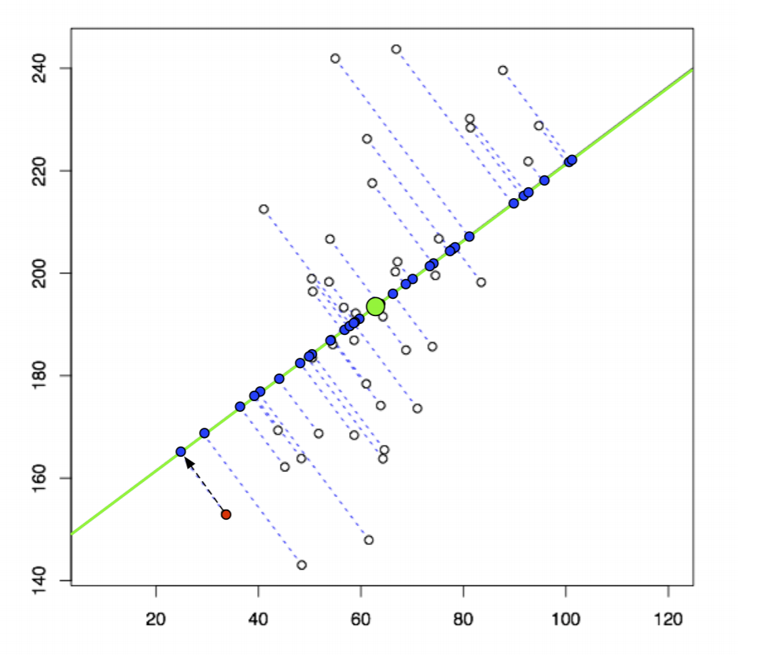
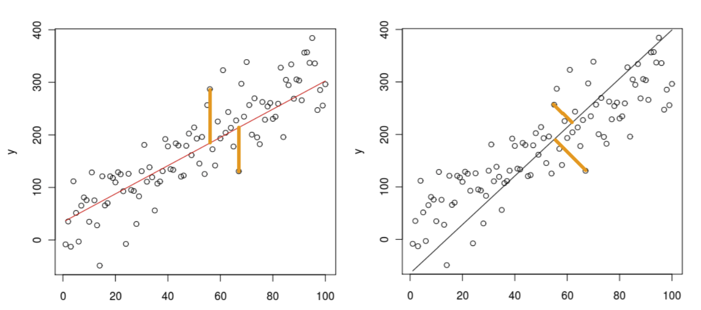

Unsupervised Learning and PCA¶
Up until this point, our studies in regression and classification have only looked at supervised learning: where the labels are known. In unsupervised learning, well, we don’t have these labels anymore.
Definition 11 (Unsupervised Learning)
Unsupervised learning is machine learning on unlabelled data: no classes, no y-values. Instead of a human “supervising” the model, the model figures out patterns from data by itself.
Unsupervised learning tries to find some sort of structure in data. The three most common kinds of unsupervised learning:
Clustering: Partitioning data into groups, where each group has similar data points.
Dimensionality Reduction: High-dimensional data actually lies near a low-dimensional subspace or manifold. In other words, a lot of the features in the high-dimensional data are unnecessary.
Density Estimation: fitting a continuous distribution to discrete data. For example, using MLE to fit Gaussians to sample points.
Note the difference between clustering and dimensionality reduction is that clustering groups similar data points together, while dimensionality reduction is more focused on identifying a continuous variation from sample point to sample point.
Let’s talk about dimensionality reduction: specifically, principal component analysis.
Principal Component Analysis (PCA)¶
Principal Component Analysis (PCA) is a very famous example of dimensionality reduction. You are given \(n\) sample points in \(\mathbb{R}^d\), and our goal is to find a \(k\)-dimensional subspace that captures most of the variation. To find this subspace, we find \(k\) orthogonal directions that capture this variation.
Let’s take a look at PCA, visually.
{kind=link}
First, we see a bunch of points in 3D on the left. Imagine they are raindrops, frozen in time, hovering over a sheet of paper. Now, after time starts again: they’ll fall to the paper and make splotches corresponding to where they were in the air. In other words, we are reducing our raindrops/data points from 3 dimensions (air) to 2 dimensions (paper). How can we do this? Note the left diagram is showing us how: we pick a \(k\)-dimensional subspace, in this case a 2-dimensional plane, and project all our data points orthogonally to that subspace. This will give us the image on the right.
So how do we choose such a subspace? We want the subspace such that when we project to the lower dimension, we can still tell the separation between the points. Formally, we want to choose \(k\) direction vectors, or principal components that maximize variance between the data points.
Definition 12 (Unsupervised Learning)
Principal Components are the \(k\) mutually orthogonal direction vectors that maximize variance among our dataset. They form the subspace that we project our high-dimensional data onto to make it low-dimensional.
Why do we do PCA- or dimensionality reduction in general?
Dimensionality reduction is very often used in preprocessing! Reducing the number of dimensions makes some computations much cheaper (faster), and such computations might include regression and classification. So if our original data had 784 dimensions, like MNIST, perhaps we could find a way to map it down to something less.
Additionally, dimensionality reduction can be used as a form of regularization: when we remove irrelevant dimensions, we reduce overfitting. Dimensionality reduction is similar to feature subset selection in this sense. However, there is a key difference: in the latter we simply remove features, while in DR we remove directions. In other words, the new PCA “features” are no longer aligned with the feature axes, since they are now linear combinations of input features.
Finally, we also just might want to find a small basis that represents the variance in our data. We’ll see examples in this note: utilizing DR to detect variation in human faces as well as in human genetics.
Let \(X\) be our \(n \times d\) design matrix, with no fictitious dimension. Assume \(X\) is centered: the mean of all sample points \(\mu_X = 0\). To understand PCA, we first must understand projecting a point onto a \(k\)-dimensional subspace.
Let’s start simple: let’s say we have a \(k=1\)-dimensional subspace. Specifically, let this single vector be \(w\). Then, the orthogonal projection of a point \(x\) onto vector \(w\) is equal to \(\tilde{x} = \frac{x \cdot w}{||w||^2} w\). Note that if \(w\) is a unit vector, then \(\tilde{x} = (x \cdot w)w\).
Definition 13 (Orthogonal Projection)
An orthogonal projection of a vector \(x\) onto a subspace \(W\) (made of orthogonal basis vectors) is the vector \(x_W\) in \(W\) that is as close as possible to \(x\).
Of course, if we project from, say, 100 dimensions to 1 dimension, we’re going to lose a LOT of information. Thankfully, we can project to several dimensions: this just means we must pick several different orthogonal direction vectors. We’re still going to orthogonally project points onto this subspace: just now, our subspace is defined by multiple orthogonal basis vectors instead of just one.
Definition 14 (Orthogonal Projection Formula)
For a \(k\)-dimensional subspace \(W\) characterized by \(k\) basis vectors \(v_1,...,v_k\), the orthogonal projection of a vector \(x\) on subspace \(W\) is \(\tilde{x} = \sum_{i=1}^{k}(x \cdot v_i)v_i\).
So a 3D point being projected onto a 2D space would look like this:
Practically, though, we more often just want the just the \(k\) principal coordinates \(x \cdot v_i\) in principal component space, not \(\tilde{x}\).
Design matrix \(X\) plays a large role in determining the principal component directions \(v_i\). Assuming \(X\) is centered, \(X^TX\) is a square, symmetric, positive semidefinite \(d \times d\) matrix. Since it is symmetric and real, we know that it has \(d\) real eigenvalues \(\lambda_1, ..., \lambda_d\), and its \(d\) corresponding eigenvectors \(v_1,...,v_d\) are all mututally orthogonal.
Now let’s sort our eigenvalues, and now let \(\lambda_1\) = smallest eigenvalue, \(\lambda_d\) = largest. We will sort our UNIT eigenvectors as \(v_1,...v_d\) to correspond with these eigenvalues. These eigenvectors are the principal components. The most important eigenvectors- i.e. the ones that take up the most variance in the dataset- are the eigenvectors with the largest eigenvalues.
Why are the eigenvectors of \(X^TX\) our principal components?
One way to see this is using MLE to fit a Gaussian to our data \(X\). We can learn a lot about the data from this Gaussian’s isocontours. From this MLE-chosen Gaussian, we choose the \(k\) Gaussian axes with the greatest variance.
For example, say we have fit this Gaussian (in blue) to the sample points (red X’s):
{kind=link}
Note this Gaussian’s isocontours will be concentric ovals with the same shape as the border shown. Remember that we take the eigenvectors (the ellipse axes shown) and eigenvalues (the magnitudes of the vectors) of the sample covariance matrix \(\Sigma\). Remember that MLE gives a covariance matrix as \(\hat{\Sigma} = \frac{1}{n}X^TX\).
Now, let’s sketch out the actual PCA algorithm.
Algorithm 15 (PCA)
Inputs \(d\)-dimensional dataset \(X\)
Output Compute principal coordinates \(x \cdot v_i\) determined by
Center \(X\). Sometimes, we want to normalize \(X\), but only when different features have different measurement units.
Compute unit eigenvectors and eigenvalues of \(X^TX\). From these, we can usually choose \(k\) based on eigenvalue sizes.
Pick the best \(k\) eigenvectors as the ones with the \(k\) largest eigenvalues: this forms our \(k\)-dimensional subspace \(W\).
Compute principal coordinates \(x \cdot v_i\) for each point in the training data, and each subspace eigenvector \(v_i\). These give us coordinates of each \(x\) in principal component space.
One thing to remember: we centered the training data beforehand. We need to apply the same thing to test data. However, there is an alternative: we can un-center the training data before we project them onto PC space.
Let’s see an example that shows the difference normalizing data could make in PCA:
So in this example, our \(X\) consists of a bunch of 4-dimensional points, one for each metropolitan region. For each point, we measure urban population and 3 crime rates per capita. We want to project this down into 2D space. On the left, we have projected data which is scaled by normalization, and on the right we don’t do this. Notice the large difference in the projected points! The reason that they look so different is the fact that rape and murder are far less common as assault. This means if we don’t normalize the data, such datapoints won’t have as much influence on PCA projections. Note that in the unscaled case, assault and urban population numbers are much larger, so they get much bigger contributions to the PCA directions than rape and murder. But when we scale, they all are about the same size.
When do we choose if we want to scale or not? Totally application-dependent. Should low-frequency events like murder and rape have a disproportionate (bigger) influence on PCA axes? If yes, then you probably want to scale.
Of course, with more eigenvectors and eigenvalues (more dimensions), we get more variance captured from the original dataset. We can calculate the percent of variance we capture by dividing the sum of our eigenvalues used by all the eigenvalues of \(X^TX\).
Note
If using PCA for preprocessing in supervised learning, then like always, using (cross) validation is a better way to choose \(k\).
We can also think of PCA as finding the optimal directions that keep most of our sample variance after we project our data down. In other words, after projection, we want to keep our points as spread out as possible, as indicated in the original high dimensions.
{kind=link}
So here, we are projecting white points in 2D onto 1D (the green line) as blue points. We want to maximize sample variance between those two points. We need to choose an orientation of this green line (choose our direction vector) that does this. Mathematically, our goal can be represented as:
We can simplify this down further as:
The fraction \(\frac{w^TX^TXw}{w^Tw}\) is a well-known construction called the Rayleigh quotient. So how can we find the \(w\) that maximizes it?
First, note that if \(w = v_i\) for some eigenvector \(v_i\) of \(X^TX\), then our Rayleigh quotient is the corresponding eigenvalue \(\lambda_i\). So out of all eigenvectors, the one with the largest eigenvalue \(v_d\) achieves maximal variance \(\frac{\lambda_d}{n}\). In fact, it beats all vectors: \(\underset{w}{\arg\max} \text{Var}(\{\tilde{X_1}, \tilde{X_2},..., \tilde{X_n}\}) = v_d\). We won’t prove this here.
Typically we want \(k\) directions in our subspace \(W\). So now, after we’ve picked one direction, then we have to pick a direction that’s orthogonal to the best direction. So we are repeating the process of finding a direction that maximizes variance, with the constraint that the direction must be orthogonal to your already picked directions. But good news: it turns out that with constraint of orthogonality to \(v_d\), \(v_{d-1}\) is the next optimal direction. Then, \(v_{d-2}\). And so on. As we know.
Yet another way to think about PCA is finding \(w\) that minimizes the mean squared projection distance. It is very similar to least-squares linear regression, with one important difference: instead of measuring the error in a fixed vertical direction, we’re measuring the error in a direction orthogonal to the principal component direction we choose. Sp for each point, error is now measured by the distance from the point to the closest point on the line. Note this visually, with LSLR on the left and PCA on the right:
{kind=link}
In both methods, though, we are still minimizing the sum of the squares of the projection distances for each point. This is equivalent to maximizing variance.